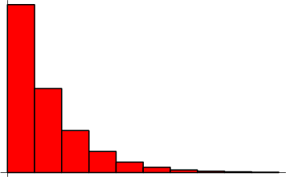
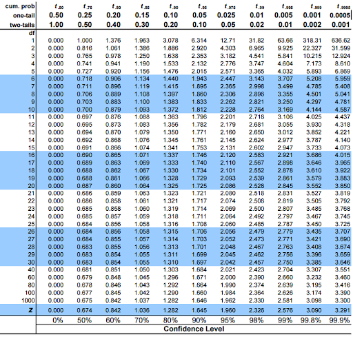

Math Intro
Terms:
- probability function (pdf) — probability of a distribution for a given value
- cumulative distribution function (cdf) — sum of lower values of the pdf
- expected value — mean value of a distribution
- jackknife — statistic estimation by removing data points
- bootstrap — statistic estimation by resampling from data
PDFs
Uniform Distribution
Every outcome has an equally likely probability.
Binomial Distribution
There are two outcomes, success (1) or failure (0), and probability of success θ. The probability of x successes in n trials is \(\frac{n!\,\theta^x\,(1-\theta)^{n-x}}{x!\,(n-x)!}\). The mean \(\mu=n\,\theta\) and the variance \(\sigma^2=n\,\theta\,(1-\theta)\).
Geometric Distribution
Probability that first success occurs on attempt x is \(\theta\,(1-\theta)^{x-1}\). Russian Roulette, for example.
Poisson Distribution
Is the limit as \(n\rightarrow\infty\) and \(\theta\rightarrow0\) such that \(n\theta=\lambda\) of the binomial distribution. \(p(x,\lambda)=\frac{\lambda^xe^{-\lambda}}{x!}\), and \(\mu=\sigma^2=\lambda\). This is also the distribution describing shot noise.

Gaussian (Normal) Distribution
Really really common. You should know what this is. \(p(x)=\frac{1}{\sqrt{2\pi}\sigma}e^{\frac{(x-\mu)^2}{2\sigma^2}}\)
Gamma Distribution
Has a few subcategories. \(f(x)=\frac{1}{\beta^\alpha\Gamma(\alpha)}x^{\alpha-1}e^{-x/\beta}\) for \(x > 0\).
- Exponential Distribution: \(\alpha=1, \beta=0\)
- Chi-Square Distribution: \(\alpha=\nu/2, \beta=2.\; \mu=\nu, \sigma^2=2\nu\).
If \(x_1,...,x_n\) are standard normal, \(y=\sum_i^nx_i^2\) has a \(X_n^2\) distribution.
Central Limit Theorem
If we have n independent random variables with the same mean and variance, as \(n\rightarrow\infty\) the distribution of the measured averages approaches a normal distribution with mean μ and variance \(\sigma^2/n\). This is true for any distribution.
Jackknife
If we're trying to measure some statistic of a sample, we can improve our estimate by getting more samples. However, this often isn't practical, so one technique to use is jackknifing. This describes creating n new samples by removing each data point one at a time from the original sample. Our statistic estimator can then be the average of the n measured estimators.

If the estimator varies with n, the sample is called biased, and we can generate a new estimator \(\theta_J=\hat{\theta_n}-bias_J=\hat{\theta}_n-\frac{n-1}{n}\sum_i^n(^i\hat{\theta}_{n-1}-\hat{\theta}_n)\).
Bootstrap
Another method we can use to try to get better accuracy is to resample from the data points we have. We randomly sample from our data on the order of 1,000 to 10,000 times, and take the average of the resulting measured statistics to get our bootstrapped statistic estimator.
t- and z- Distributions
If we know a variable follows a normal distribution with mean μ and variance σ2, we can test how likely it is that a point comes from that distribution with the z-test: \(z=\frac{X-\mu}{\sigma}\). This is useful in nonparametric tests, for example, and we can use a z score table to interpret results from the test.

If we know the mean of the distribution, but not the variance, we can use the standard deviation s of the sample as a variance estimator: \(t=\frac{X-\mu}{s/\sqrt{n}}\). Results can be interpreted from a t score table.
